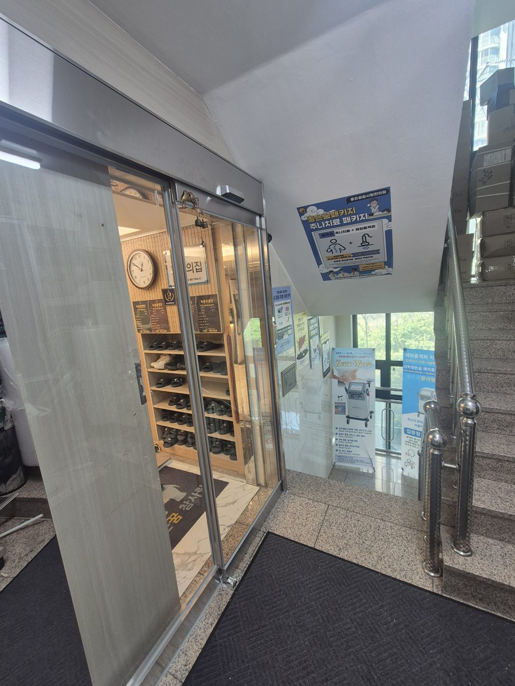

한 줄 답변
시험 4주 전에는 공부 시간을 늘리기보다 일어나는 시각과 식사 시간, 낮 졸음을 먼저 점검해 두면 시험 당일 아침의 컨디션을 미리 맞춰 보기 쉽습니다.
시험 4주 전에는 공부 시간을 늘리기보다 일어나는 시각과 식사 시간, 낮 졸음을 먼저 점검해 두면 시험 당일 아침의 컨디션을 미리 맞춰 보기 쉽습니다.
여쭙는 것
- 최근 한 주 동안 일어난 시각이 날마다 얼마나 달랐나요?
- 하루에 식사를 몇 번, 몇 시쯤 하고 있나요?
- 낮에 가장 졸린 시간대는 언제인가요?
한의원에서 함께 살필 것
- 시험을 앞두고 4주 동안 잠과 식사가 무너진 경우 하루 리듬을 함께 살핍니다.
- 공부 시간이 늘어 몸이 지친 경우 생활 리듬과 휴식을 함께 살핍니다.
- 시험 준비 중 잠이 얕아진 경우 수면 습관을 함께 살핍니다.
먼저 확인이 필요한 신호
- 잠을 거의 못 자는 날이 일주일 넘게 이어지는 경우
- 가슴 두근거림, 숨 가쁨, 심한 불안이 함께 있는 경우
- 먹지 못하거나 체중이 눈에 띄게 줄어드는 경우

시험 4주 전이라면 공부량을 늘리기 전에 일어나는 시각부터 시험 시각에 맞춰 고정해 두는 것이 먼저입니다. 시험이 가까워지면 잠을 줄여 공부 시간을 늘리고 싶어집니다. 하지만 몇 주 동안 이어지는 수면 부족은 집중력과 소화에 먼저 영향을 주는 경우가 많습니다.
왜 이런 불편이 생길 수 있나요
- 잠을 줄여 공부 시간을 늘리면 며칠은 버틸 수 있지만, 부족한 잠이 쌓이면 낮 졸음과 집중력 저하로 먼저 나타나는 경우가 많습니다.
- 주말에 몰아서 자거나 일어나는 시각이 들쭉날쭉하면 몸의 하루 시계가 흔들려, 시험 시간에 머리가 맑지 않을 수 있습니다.
- 끼니를 거르거나 밤늦게 먹으면 속이 불편해 잠이 얕아지고, 다시 아침 입맛이 떨어지는 순환이 생기기 쉽습니다.
- 한의학에서는 잠과 소화, 긴장을 따로 떼지 않고 하루 리듬 안에서 함께 살핍니다.

먼저 이렇게 여쭙니다
- 최근 한 주 동안 일어난 시각이 날마다 얼마나 달랐나요?
- 하루에 식사를 몇 번, 몇 시쯤 하고 있나요?
- 낮에 가장 졸린 시간대는 언제인가요?
- 시험 시간과 같은 시간대에 머리가 맑은 날이 있나요?
- 커피나 에너지 음료는 하루에 몇 잔, 몇 시까지 마시나요?
4주 동안 점검해 볼 것
- 시험 시작 시각에 맞춰 일어나는 시각을 조금씩 당겨 두기
- 식사 시간을 정해 두어 시험 당일 속이 낯설지 않게 하기
- 공부 시간표에 짧은 휴식과 가벼운 걷기를 함께 넣기
- 시험 직전 주에는 새로운 음식이나 음료를 시도하지 않기
- 잠들기 1시간 전에는 화면을 끄고 다음 날 공부할 것만 적어 두기

한의원에서 함께 살필 수 있는 경우
- 시험을 앞두고 4주 동안 잠과 식사가 무너진 경우 하루 리듬을 함께 살핍니다.
- 공부 시간이 늘어 몸이 지친 경우 생활 리듬과 휴식을 함께 살핍니다.
- 시험 준비 중 잠이 얕아진 경우 수면 습관을 함께 살핍니다.
좋은꿈참사랑한의원에서는 먼저 잠과 하루 리듬을 충분히 듣고, 필요하다고 판단될 때 진맥·설진으로 몸 상태를 살핀 뒤 침이나 한약 상담 등 맞는 방법을 함께 정합니다. 귀가 전에는 집에서 지켜볼 점과 다음에 확인할 일을 알려 드립니다.
이렇게 기록해 오시면 상담이 쉬워집니다
- 일주일 동안 잠든 시각, 일어난 시각, 밤에 깬 횟수
- 하루 식사 시간과 커피·에너지 음료를 마신 시각
- 낮에 가장 졸렸던 시간대와 공부가 잘 된 시간대
- 시험 날짜와 시험 시작 시각

이런 증상은 먼저 확인이 필요합니다
- 잠을 거의 못 자는 날이 일주일 넘게 이어지는 경우
- 가슴 두근거림, 숨 가쁨, 심한 불안이 함께 있는 경우
- 먹지 못하거나 체중이 눈에 띄게 줄어드는 경우
복용 중인 약은 처방한 의사와 상의 없이 줄이거나 끊지 않습니다. 위 신호가 있거나 갑자기 심해지면 한의원 진료를 기다리지 말고 119나 가까운 응급실을 이용하세요.
자주 묻는 질문
시험 직전에는 밤을 새워서라도 공부해야 하지 않나요?
밤샘 뒤에는 다음 날 집중력이 떨어지는 경우가 많아, 일정한 수면 시간을 지키는 쪽을 권하는 경우가 많습니다.
시험 당일 아침 시각에 맞추려면 언제부터 준비하나요?
보통 한두 주 전부터 일어나는 시각을 조금씩 당겨 보는 방법을 안내합니다.
한의원에서는 무엇을 보나요?
잠의 모양, 식사와 소화, 긴장 정도를 함께 묻고 생활 전체의 리듬 속에서 살핍니다.
시험이 4주도 안 남았으면 늦은 건가요?
늦지 않습니다. 남은 기간이 짧을수록 일어나는 시각 하나만 먼저 고정하고, 식사 시간은 그다음에 맞추는 식으로 한 가지씩 바꿔 보도록 안내합니다.
이 글은 일반적인 건강 정보이며 개인의 진단이나 치료를 대신하지 않습니다. 증상이 있거나 복용 중인 약이 있다면 진료를 통해 확인하세요. 치료 효과는 개인마다 다를 수 있습니다.
지난 이야기부터 이어서 묻습니다
좋은꿈참사랑한의원은 재진 때 지난번 이야기부터 이어서 여쭙니다. 진료시간과 예약은 오시는 길에서 확인하세요.
좋은꿈참사랑한의원은 재진 때 지난번 이야기부터 이어서 여쭙니다. 진료시간과 예약은 오시는 길에서 확인하세요.